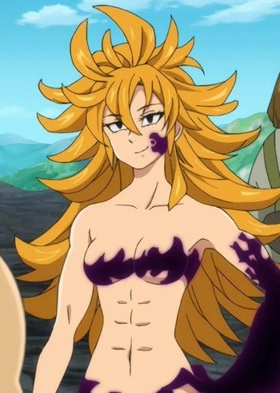
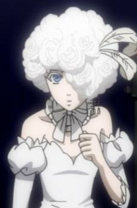
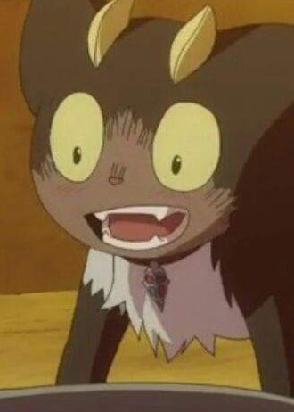
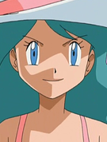

|  |
Derieri |
- The Seven Deadly Sins: Revival of The Commandments
- The Seven Deadly Sins: Wrath of the Gods
|
Derieri is an elite warrior of the Demon Clan, serving inder the Demon King as the Purity of the Ten Commandments. She has a laid back and nonchalant demeanor, usually calm and not shocked often. She expresses laziness and boredom majority of the time. Sometimes, she has a very quick temper when cetain buttons are pushed. She has a great hatred towards the Goddess Clan. She is very close to Monspeet and wants to protect him. |
|  |
Doll |
- Black Butler: Book of Circus
|
Doll is a tightrope walker at Noah's Ark Circus. She is welcoming, and somwhow innocent but very loyal to the first-string circus performers. She is know as the princess of the Circus. She is eager to make new friends and supported them. |
|  |
Kuro |
- Blue Exorcist
- Blue Exorcist: Kuro's Trip Away From Home
- Blue Exorcist Specials
- Blue Exorcist Movie
- Blue Exorcist: Kyoto Saga
|
Kuro is a Cat Sidhe and Rin Okumura's familiar. As a cat, he is very playful and energetic, asking Rin to play with him. He does have a fierce side. He love Shiro's catnip wine and enjoys the present of Shiro Fujimoto. He does not like being lonely. |
|  |
Kylie |
- Pokemon Diamond and Pearl
|
Kylie is a fiancee of Roman, the owner of the Seven Star Restuarant in the Valor Lakefront. |
 |
Lizbeth |
- Sword Art Online
- Sword Art Online: Sword Art Offline
- Sword Art Online: Extra Edition
- Sword Art Online: Extra Edition - Sword Art Offline
- Sword Art Online II
- Sword Art Online II: Debriefing
- Sword Art Online II: Sword Art Offline
- Sword Art Online Movie: Ordinal Scale
- Sword Art Online: Alicization
- Sword Art Online: Alicization - Reflection
- Sword Art Online: Alicization - War of Underworld
|
Lizbeth or Rika Shinozaki is a mace wielder that is a blacksmith as well. Lizbeth is a nice and friendly person that gets along pretty easily. She hardworking but defensive and aggressive if someone challenges her. |
 |
Megmica Strauski |
|
Megmica Strauski is a school friend of Lillia. She is sensitive and gentle. |
 |
Shirley |
|
Shirley is Kiritsugu's father assistant, who admires his work and looks forward succeeding him. |
 |
Sylvie Lumiere |
- Baccano!
- Baccano! Specials
|
Sylvie Lumiere is the girlfriend of Gretto Avaro and one of immortals of Advena Avis in 1711. She was a maid to the Avaro Family and now a singer who seeks revenges for her lover. |